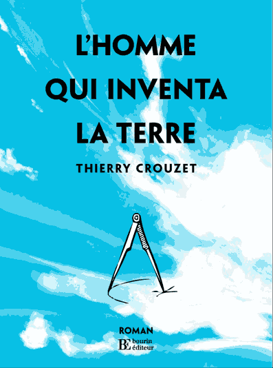

Trois nouvelles couvertures
Geoffrey Dorne a réagit à mes trois propositions de couverture en proposant trois nouvelles suggestions.

couv1g

couv2

couv3
Suite | 2009 | Sommaire | Texte publié dimanche 25 janvier 2009
Geoffrey Dorne a réagit à mes trois propositions de couverture en proposant trois nouvelles suggestions.
Suite | 2009 | Sommaire | Texte publié dimanche 25 janvier 2009